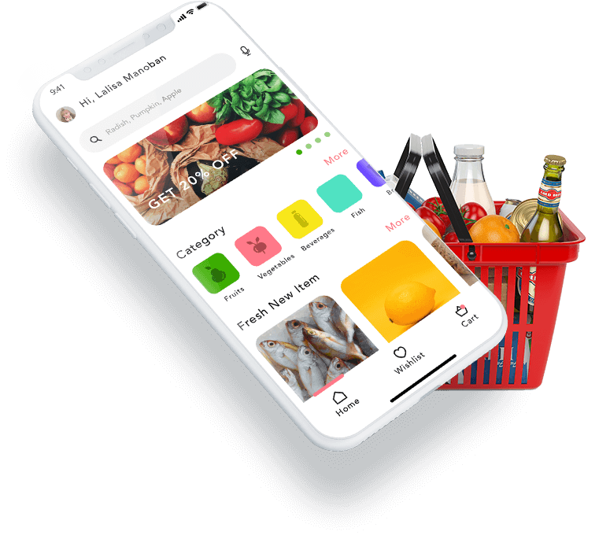

Browse on Your Time
- Whether it’s 2 o’clock in the afternoon or 4 o’clock in the morning, online shopping allows you to browse the aisles when it is most convenient for you. Though you will have to be present when the groceries are delivered, you can choose a delivery time frame that is most convenient for you.
Avoid the Line and Shop in the Comfort of your Home
- Whether fulfilling your weekly shopping list or preparing for Thanksgiving dinner, you’ll experience the same crowd every time… none! Grocery shopping online for home delivery allows you the pleasure of shopping from your dining room table, your couch, or your office, without navigating crowded aisles and lengthy cashier lines. That means having more time to do the things you love.

Avoid Making Multiple Trips
- Forget to add an item to your virtual shopping cart? No big deal. With online shopping, you can add items to your cart, even after having made the purchase, up until the day of delivery to your home. That means no more treks back to the store for that single item you forgot.
Enjoy the Convenience of Online Shopping with LOVELY GROOFERS
- lovely groofers is pleased to announce that many of our many locations offer online shopping with home grocery delivery service. Locate your nearest supermarket to see if you can take advantage of online grocery shopping. And if your local Foodtown doesn’t offer online shopping? Don’t worry—Foodtown strives to provide our customers with the most convenient shopping experience yet, built upon affordable prices, ongoing sales events, and friendly and attentive service.